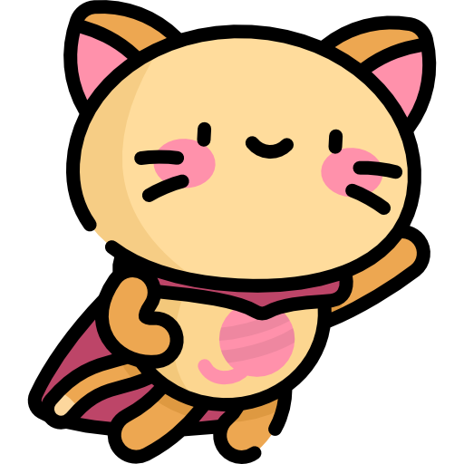

Feline Facts

Cats are impressive jumpers, capable of leaping up to six times their body length in a single bound, thanks to powerful muscles in their hind legs.
Cats are champions of napping, spending about two-thirds of their lives sleeping. Their sleep patterns are often characterized by short periods of deep sleep followed by shorter periods of light sleep.

Cat's tail can convey a lot about their mood. For instance, a twitching tail can indicate agitation or excitement, while a puffed-up tail signals fear or aggression.

Cats have sensitive hearing, so excessively loud or jarring music may be uncomfortable or distressing for them. It's essential to monitor their reactions and adjust the volume accordingly.
Just some inspiring quote that I will look into later. Now I just need it to be there to fill the space. I don't know what to write but I want this to be quite long. No one is going read this hopefully.
-Me, Some time this year